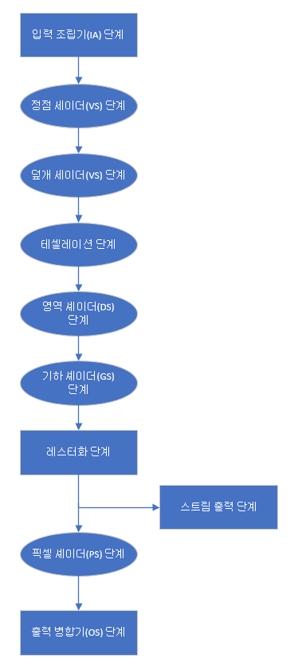
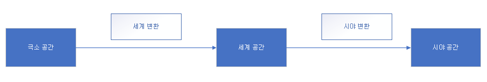

랜더링 파이프 라인 정리
정의
3차원 장명의 기하학적 서술과 가상 카메라의 위치 및 방향이 주어졌을 때 현재 가상 카메라에 비친 3차원 장면의 모습에 근거해서 2차원 이미지를 생성하는 데 필요한 일련의 단계들 전체를 렌더링 파이프라인이라고 부른다.

입력 조립기 단계(IA, input assembler)
메모리에서 기하자료(정점, 색인)을 읽어 기하하적 기본도형(삼각형, 선분)을 조립합니다.
정점 세이더 단계(vertex shader)
- 국소 공간과 세계 공간(local space, world space)
- 국소 공간(local space) : 물체 자신의 국소 좌표계를 기준으로 구축합니다.
- 세계 공간(world space) : 장면 전역의 좌표계를 기준으로 구축합니다.
- 세계 변환(world transform) : 국소 좌표계에서 상대적인 좌표를 전역 장면 좌표계에 상대적인 좌표로 바꾸는 것을 말합니다. 해당 변환 행렬을 세계 행렬(world matrix)이라 부릅니다.
- ex) W = SRT (w:월드, S:비례, R:회전, T:이동)
- 시야 공간(view space)
- 가상카메라를 기준으로 좌표계를 부여합니다.
카메라는 원점에 놓여 양의 z축을 바라봅니다. x축은 카메라의 오른쪽 방향이고 y축은 카메라의 위쪽 방향입니다. - 시야 변환(view transform) : 세계 공간에서 시야 공간으로의 좌료 변경 변환을 말합니다. 해당 변환 행렬을 시야 행렬(view matrix)이라고 부릅니다.
- 가상카메라를 기준으로 좌표계를 부여합니다.
- 투영과 동차 절단 공간
- 카메라 공간은 절두체(frustum; 각뿔대, 끝이 잘린 사각뿔)로 정의됩니다.
- 3차원 정점 v를 투영선이 2차원 투영 평면과 만나는 점 v’로 변환하는 것을 말합니다.
- 정규화된 장치 좌표(NDC, normalized device coordinates) : 사상한 후의 좌표
테셀레이션 단계(덮개 셰이더, 영역 셰이더 단계)
- 주어진 메시의 삼각형들을 더 잘게 쪼개서(세분) 새로운 삼각형들을 만드는 과정을 말합니다.
- 덮게 세이더, 영역 세이더 단계는 테셀레이션에 연결된 단계입니다.
- 선택적입니다.(테셀레이션이 필요하지 않으면 이 단계들을 생략할 수 있습니다.)
- ex) 카메라에 가까운 메시의 면들을 좀 더 세밀하게 표현하고, 거리가 먼 면들은 테셀레이션을 적용하지 않는 방식을 적용할 수 있습니다.
기하 셰이더 단계(geometry shader)
- 선택적입니다.
- 하나의 온전한 기본도형을 입력받아서 그것을 임의로 변형합니다.
- ex)정점 세이더는 항상 정점 하나를 받아서 정점 하나를 출력하는데 기하 셰이더의 흔한 용도는 점이나 선분을 사각형으로 확장하는 것입니다.
기하 셰이더의 출력을 스트림 출력 단계를 통해 메모리의 버퍼에 저장해 두고 나중에 활용하는 것이 가능합니다.
절단
- 완전히 시야 절두체 바깥에 있는 기하구조는 폐기해야 하며, 절두체의 경계면과 교차하는 기하구조는 절두체 내부의 것만 남도록 잘라내야 합니다.
- NDC 좌표를 통해 판별할 수 있습니다.
레스터화 단계(rasterizer stage)
- 투영된 3차원 삼각형으로부터 픽셀 색상들을 계산하는 것입니다.
- 뷰포트 변환
- 절단을 마치고 나면 하드웨어는 원근 나누기를 수행해서 동차 절단 공간 좌표를 정규하된 장치 좌표(NDC)로 변환할 수 있습니다.
- 2차원 x,y 좌표성분들이 후면 버퍼의 한 직사각형 영역으로 변환된다. 그 영역이 바로 뷰포트입니다.
- z 성분은 깊이 버퍼링에 사용한다.
- 후면 선별
- 후면 삼각형을 골라서 폐기하는 공정을 후면 선별이라고 부릅니다.
- 관례상, 감는 순서가 시계방향인 삼각형은 전면이고, 반시계방향인 삼각형은 후면입니다.
- 정점 특성의 보간
- 정점 자료에는 위치 정보뿐만 아니라 색상이나 법선 벡터, 텍스처 좌표 같은 추가적은 특성을 붙일 수 있다.
- 정점의 그러한 특성들을 삼각형을 덮는 각 픽셀에 대해 보간해야 한다.
- ex)3차원 선분이 2차원으로 투영될 때 보간된 특성을 그대로 화면 공간에 사상하면 간격이 고르지 않다. 다행히 Direct3D에서는 쓰이는 원형 보정 보간(perspective correct interpolation)이라는 보간 방법을 통해 문제를 해결합니다.
픽셀 셰이더 단계(pixel shader)
- 각각의 픽셀 단편(pixel fragment)에 대해 실행됩니다.
- 보간된 정점 특성들을 입력받아서 하나의 색상을 출력합니다.
출력 병합기 단계(output merger)
- 일부 픽셀 단편들이 기각될 수 있고(이를테면 깊이 판정이나 스텐실 판정에 의해), 기각 되지 않은 픽셀 단편들은 후면 버퍼에 기록된다.
- 혼합(blending)도 이 단계에서 일어납니다.